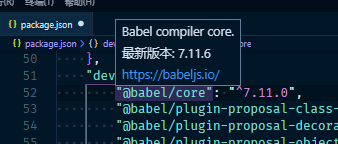

通过使用 npm outdated 和 npm update 命令，可以对前端项目中的第三方依赖版本进行分析与升级。但他们可用的参数较少，有些过于简单。
在 Microsoft Visual Code 编辑器中，当鼠标停留在依赖行并保持不动时，它会去查询该行依赖的最新版本。这在对单个的第三方依赖版本升级上会有比较简单快捷的辅助。

对于依赖众多的中大型项目，其第三方依赖包可能多达上百个。当希望进行大的版本和依赖升级时，手动逐个去检测和修改版本号也会是一个比较麻烦的事情。利用 npm-check-updates 可以协助应对这种场景。它是一个帮助你升级 package.json 中的依赖至最新版本，并且提供多个参数以满足不同的升级需求。
使用 npm-check-updates
npm-check-updates 的使用很简单。进入项目目录中，然后使用 npx 执行其命令，即可进行最新依赖版本的检测：
npx npm-check-updates |
当然，你也可以全局安装它，然后就可以使用其提供的 ncu 命令：
npm i -g npm-check-updates |
默认情况下，执行 ncu -u 即可将 package.json 中的所有第三方依赖版本修改为其最新的版本。
一些示例：
交互式升级：每一个依赖的修改都需手工确认 |
调用 npm-check-updates 模块化 API 接口方式
此外，你也可以通过命令行方式调用其 API 接口，以实现定制的辅助工具或脚本：
const ncu = require('npm-check-updates'); |